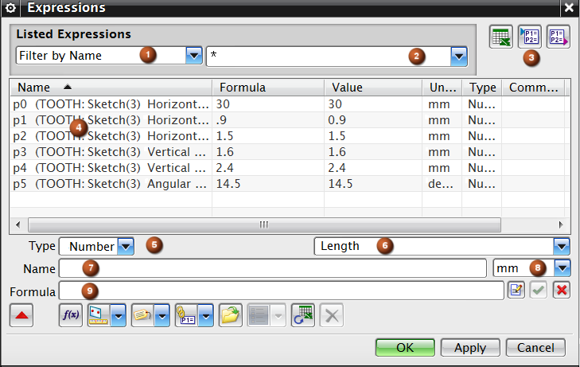

表达式类别 – 用于选择类别以过滤列表窗口中显示的表达式。
过滤框 – 根据过滤器类别类型（即按名称过滤、按公式过滤、按特征类型过滤），您可以输入过滤字符串，也可以从过滤列表中选择。
电子表格编辑、导入导出 – 在电子表格中编辑表达式，将文本文件从部件中导出，或导入到部件中。
“表达式”表 – 详细显示部件文件中表达式的可排序列表。
类型 – 指定表达式数据类型。
量纲 – 当数字为所选类型时，“量纲”选项列表可用。 使用这些选项来指定用于新表达式的尺寸种类。单位列表将发生变化也匹配所选的量纲。比如长度中的毫米、英寸，或者角度中的度或弧度，有一种特殊情况：量纲为恒定时，则不定义单位。
名称 – 用于指定新表达式的名称、更改现有表达式的名称，以及高亮显示现有表达式以进行编辑。
单位 – 指定所选量纲的单位。
公式 – 允许您编辑从列表中选择的表达式公式、输入新表达式的公式或创建部件间表达式的引用。